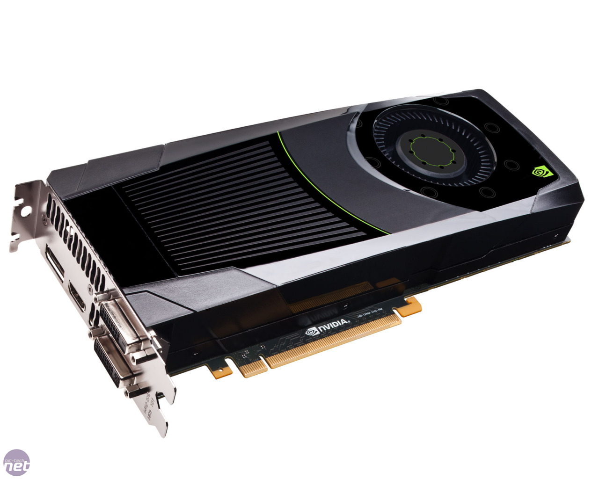
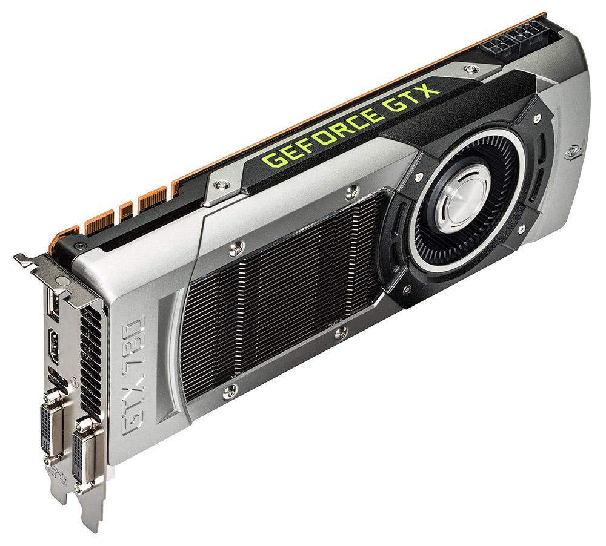
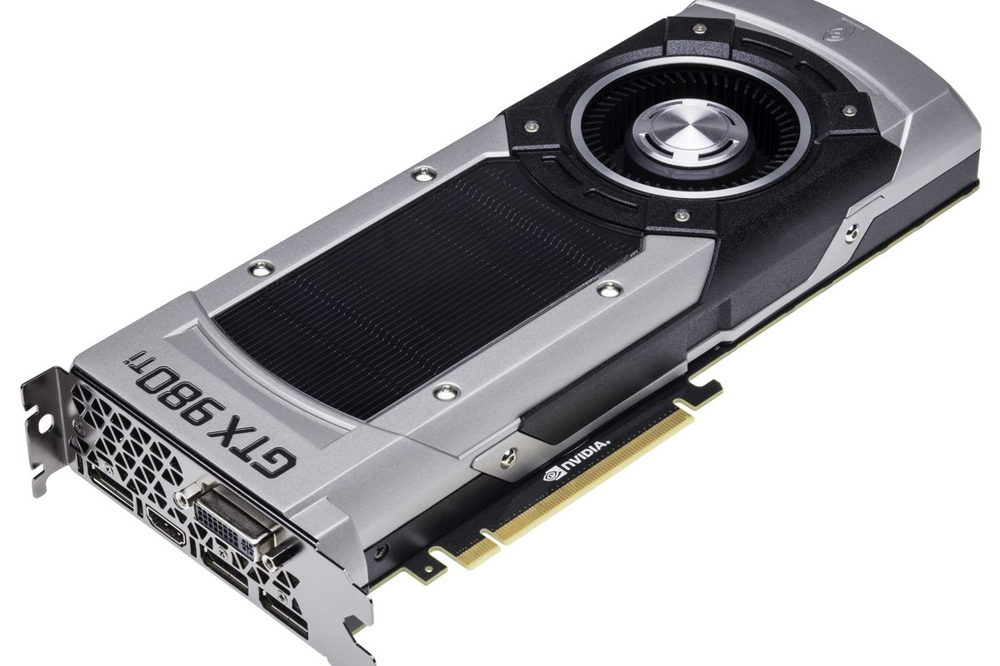
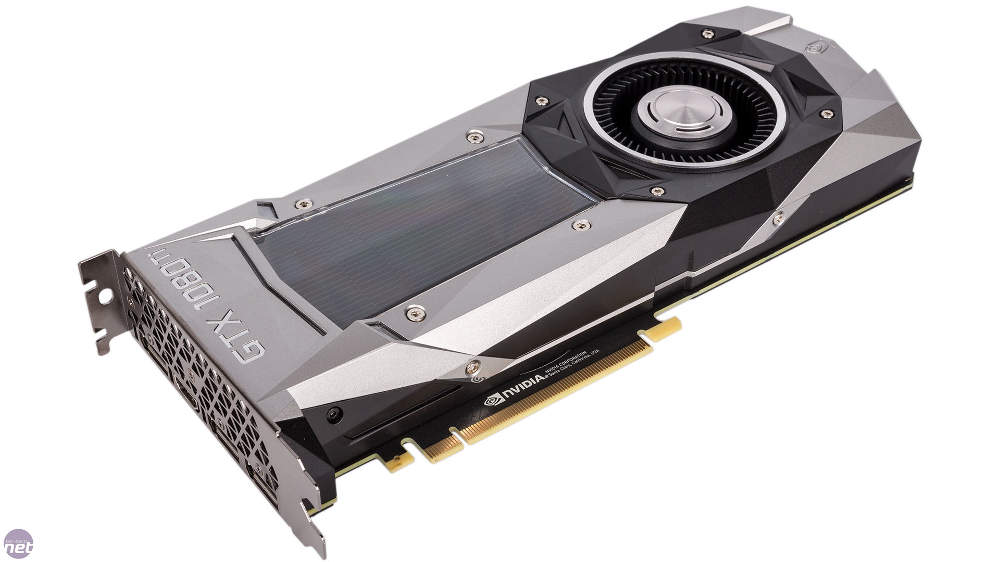
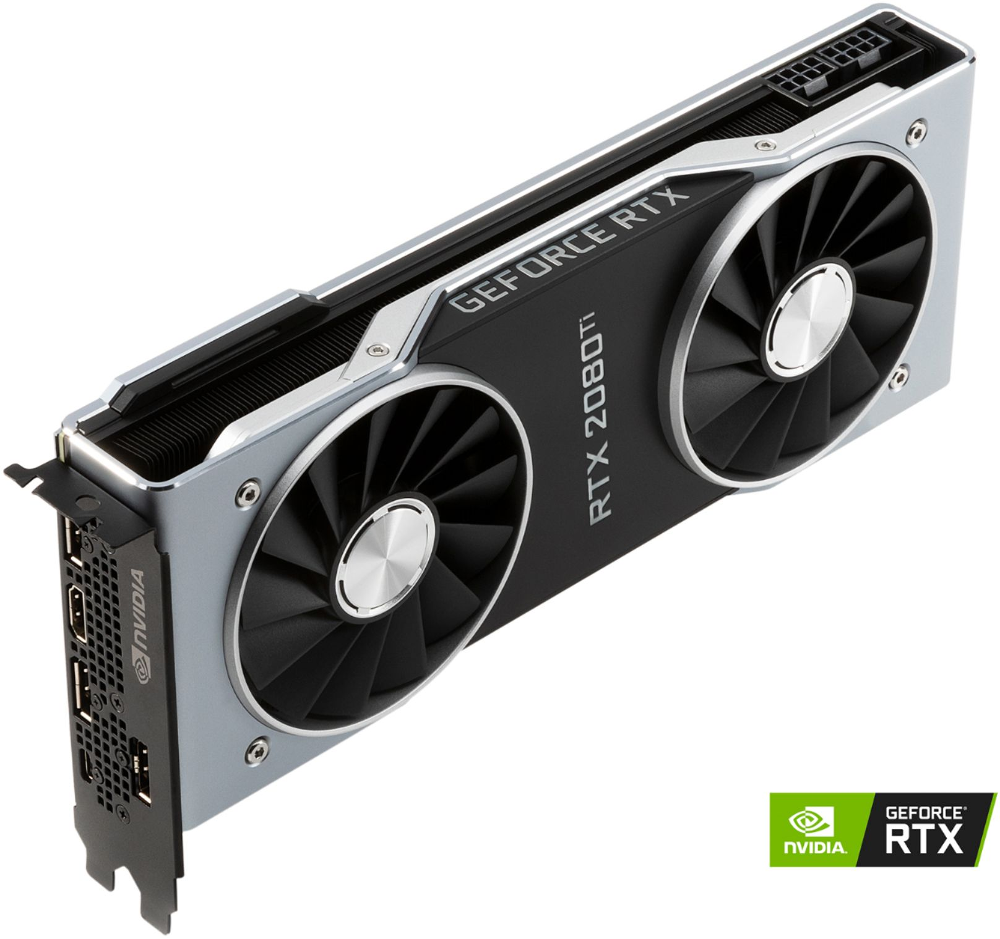

NVIDIA videókártyák
Története
A céget 1993-ban alapította Jen-Hsun Huang, a jelenlegi cégvezető, Curtis Priem és Chris Malachowsky
GeForce 6
A GeForce 6 sorozatban az NVIDIA elmélyedt a DX9 teljesítmény problémájában, ami aláásta az előző generáció sikerét. A GeForce 6 sorozat nem csak a Direct 3D shader-t, de a DirectX Shader Model 3.0-t is támogatta, amíg az ATI X800-as sorozata csak az előző 2.0-s verziót támogatta. Ez egy jelentéktelen erőfeszítésnek tűnt, ugyanis az akkori játékok nem támogatták. Ennek ellenére bemutatta, hogy az NVIDIA újra felveszi a harcot és újabb fejlesztéseket tervez. Ami szemmel láthatóan feltűnt az az volt, hogy a két cég termékei ugyanolyan teljesítményt nyújtottak. A közép-kategóriás kártyák a két cégtől demonstrálták a fogyasztók étvágyát egy megfizethető, magas-teljesítményű grafikus kártyára. A GeForce 6 sorozat egy nagyon érdekes periódusban került forgalomba: a Doom 3 játék megjelenésekor az ATI Radeon 9700 gondokkal küzdött az OpenGL teljesítményben. A GeForce 6600GT elérhetővé tette a játékosok számára, hogy a Doom 3-at nagyon magas felbontásban tudják élvezni. Az SLI technológia és a teljesítmény tuning révén az NVIDIA újra piacvezető szerepbe küzdötte fel magátTöbb infó




